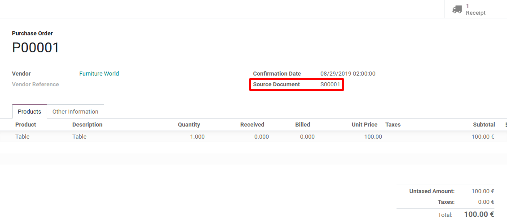
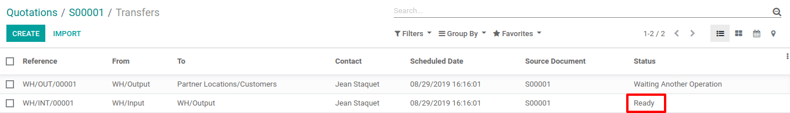

Organizar un cross-dock en un almacén¶
El cruce de andén (o cross-docking) es el proceso de enviar productos que se reciben directamente al cliente, sin hacer que ingresen a las existencias. Los camiones descargan en un área sin almacenaje intermedio con el fin de reorganizar productos y cargar otro camión.

Nota
Para obtener más información sobre cómo organizar su almacén, consulte nuestro blog: ¿Qué es cross-docking y es lo que necesita?
Configuración¶
En la aplicación Inventario, abra y active las Rutas multietapa.

Nota
Hacer esto también habilitará la función Ubicaciones de almacenamiento.
Debe configurar los envíos entrantes y salientes para que funcionen con 2 pasos. Para adaptar la configuración, vaya a y edite su almacén.
Esta modificación le llevará a la creación de una ruta sin almacenaje intermedio que puede encontrar en .

Configurar productos con una ruta sin almacenaje intermedio¶
Cree el producto que utiliza la ruta sin almacenaje intermedio y en la pestaña de Inventario seleccione las rutas Comprar y Sin almacenaje intermedio (cross dock). En la pestaña de compra especifique el proveedor de quien compra el producto y establezca su precio.


Una vez hecho esto, cree una orden de venta para el producto y confírmela. Odoo, en automático, creará dos traslados y se vincularán a la orden de venta. El primer traslado es de la ubicación de entrada a la ubicación de salida, el cual corresponde al movimiento del producto en el área de cross dock. El segundo es la orden de entrega de la ubicación de salida a la ubicación de cliente. Ambos están en el estado En espera de otra operación porque aún debemos ordenar el producto de nuestro proveedor.

Vaya a la aplicación Compra, ahí encontrará la orden de compra que el sistema activó de forma automática. Valídela y reciba los productos en la ubicación de entrada.

Cuando haya recibido los productos del proveedor, puede regresar a su orden de venta inicial y validar el traslado interno de entrada a salida.

La orden de entrada está lista para procesarse y también se puede validar.